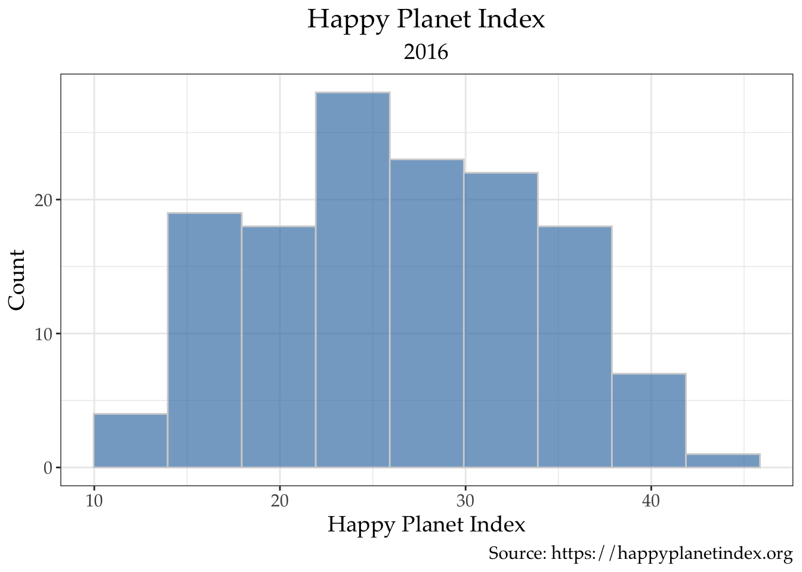
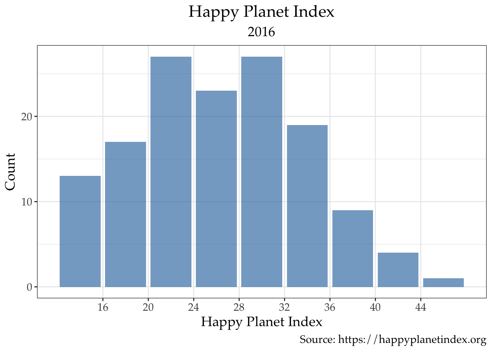
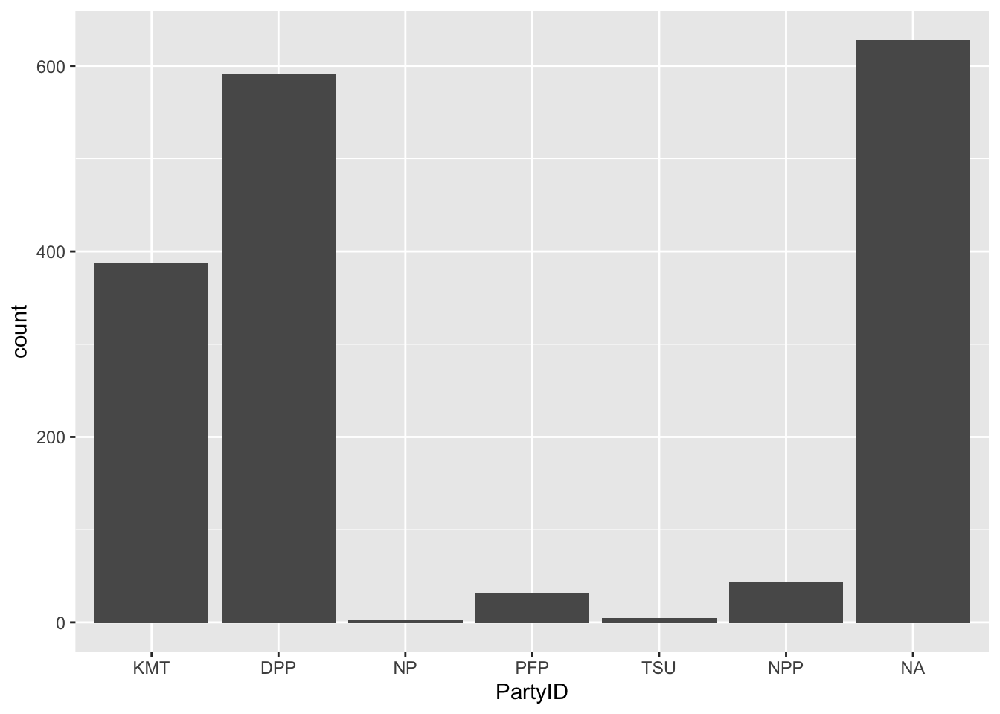
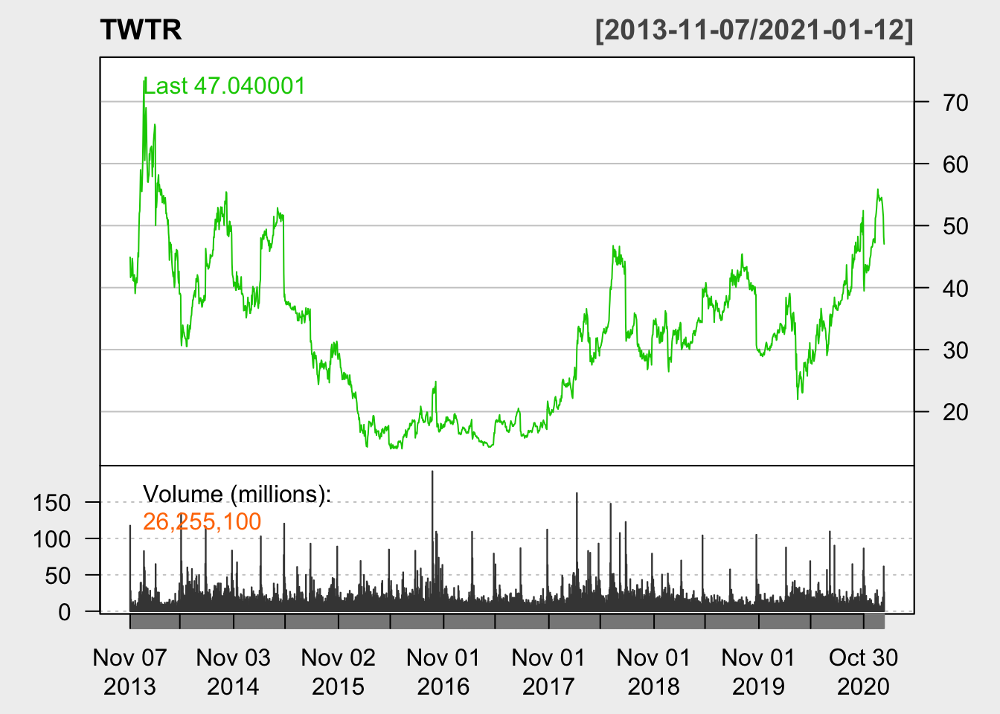

Chapter 2 Functional approach
In this module, we will emphasize on hands-on applications, including building visual vocabulary, deciding chart types by function and data types and building charts using sample programs.
Starter: What to plot and How
2.1 Distribution
2.1.1 Univariate
2.1.1.1 Histogram
The following example demonstrates creation of a histogram using four packages. The package vroom is the most convenient tool for importing data in text form. Other packages can also be used for importing data from other software applications. For instance, the packages haven can import SPSS, SAS and Stata data files. There are multiple packages that can import Excel files. The default is the package *readxl**.
The package janitor is responsible for doing the cleaning jobs such as messy variable (e.g. with space embedded names) and the package RColorBrewer provides great choices of palettes and colors by names (e.g. steelblue).
library(vroom)
library(janitor)
library(ggplot2)
library(RColorBrewer)
hpi2016=vroom::vroom("https://raw.githubusercontent.com/datageneration/datavisualizationinpractice/main/data/happyplanetindex.csv", .name_repair = janitor::make_clean_names)
ggplot(hpi2016) +
aes(x = happy_planet_index) +
geom_histogram(bins = 9, fill = "steelblue", color = "lightgrey", alpha =0.7) +
labs(title = "Happy Planet Index", subtitle = "2016", caption = "Source: https://happyplanetindex.org",
x="Happy Planet Index",y="Count") +
theme_bw() +
theme(plot.title = element_text(hjust = 0.5), plot.subtitle = element_text(hjust = 0.5),
text=element_text(size=14,family="Palatino"))
Alternatively, the histogram can be built with tick marks between each bin using geom_bar:
ggplot(hpi2016) +
aes(x = happy_planet_index) +
geom_bar(fill = "steelblue", alpha =0.7) +
scale_x_binned() +
labs(title = "Happy Planet Index", subtitle = "2016", caption = "Source: https://happyplanetindex.org",
x="Happy Planet Index",y="Count") +
theme_bw() +
theme(plot.title = element_text(hjust = 0.5), plot.subtitle = element_text(hjust = 0.5),
text=element_text(size=14,family="Palatino"))
For a line histogram, geom_freqpoly() can be used:
ggplot(hpi2016) +
aes(x = happy_planet_index) +
geom_freqpoly(bins = 10) +
labs(title = "Happy Planet Index", subtitle = "2016", caption = "https://happyplanetindex.org",
x="Happy Planet Index",y="Count") +
theme_bw() +
theme(plot.title = element_text(hjust = 0.5), plot.subtitle = element_text(hjust = 0.5),
text=element_text(size=14,family="Palatino"))2.1.1.2 Bivariate/Multivariate
With more than one variables, there are many choices for distribution charts. This example illustrates the faceted scatterplot.
library(gapminder)
gm=gapminder
ggplot(gm) +
aes(x = gdpPercap, y = lifeExp, colour = continent) +
geom_point(size = 0.5) +
scale_x_continuous(trans = "log10", labels = scales::comma) +
theme_bw() +
facet_wrap(vars(continent)) +
labs(title="Life Expectacy and GDP Per Capita (logged)",
x="GDP Per Capita",y="Life Expectancy", caption="Source: Gapminder.org") +
theme(plot.title = element_text(hjust = 0.5),
text=element_text(size=12,family="Palatino"), legend.position=c(.9,.2))2.2 Composition
2.2.1 Stack histogram
ggplot(hpi2016) +
aes(x = happy_planet_index, fill = region) +
geom_histogram(bins = 30L) +
scale_fill_brewer(palette = "Set2") +
theme_bw() +
labs(title = "Happy Planet Index", subtitle = "2016", caption = "https://happyplanetindex.org",
x="Happy Planet Index",y="Count") +
theme_bw() +
theme(plot.title = element_text(hjust = 0.5), plot.subtitle = element_text(hjust = 0.5),
text=element_text(size=14,family="Palatino"), legend.position = "bottom")2.3 Comparison
2.3.1 Bar charts
# Import the TEDS 2016 data in Stata format using the haven package
# install.packages("haven")
library(tidyverse)
library(haven)
TEDS_2016 <- read_stata("https://github.com/datageneration/home/blob/master/DataProgramming/data/TEDS_2016.dta?raw=true")
# Prepare the analyze the Party ID variable
# Assign label to the values (1=KMT, 2=DPP, 3=NP, 4=PFP, 5=TSU, 6=NPP, 7="NA")
TEDS_2016$PartyID <- factor(TEDS_2016$PartyID, labels=c("KMT","DPP","NP","PFP", "TSU", "NPP","NA"))
# Run a frequency table of the Party ID variable using the descr package
# install.packages("descr")
library(descr)
freq(TEDS_2016$PartyID)
## TEDS_2016$PartyID
## Frequency Percent
## KMT 388 22.9586
## DPP 591 34.9704
## NP 3 0.1775
## PFP 32 1.8935
## TSU 5 0.2959
## NPP 43 2.5444
## NA 628 37.1598
## Total 1690 100.0000
# Better plot with colors
# Apply percentages instead of counts
ggplot(TEDS_2016, aes(PartyID)) +
geom_bar(aes(y = (..count..)/sum(..count..),fill=PartyID)) +
scale_y_continuous(labels=scales::percent) +
ylab("Party Support (%)") +
xlab("Taiwan Political Parties") +
theme_bw()
# Sort the distribution with party colors
TEDS_2016 %>%
count(PartyID) %>%
mutate(perc = n / nrow(TEDS_2016)) -> T2
ggplot(T2, aes(x = reorder(PartyID, -perc),y = perc,fill=PartyID)) +
geom_bar(stat = "identity") +
labs(title="Party Support in Taiwan", subtitle = "2016",
x="Taiwan Political Parties",y="Party Support (%)", caption="Source: Taiwan Election and Democratization Study") +
theme_bw() +
scale_fill_manual(values=c("steel blue","forestgreen","khaki1","orange","goldenrod","yellow","grey")) +
theme(plot.title = element_text(hjust = 0.5),plot.subtitle = element_text(hjust = 0.5),
text=element_text(size=12,family="Palatino"))### Time series
2.3.1.1 Stock chart using package quantmod
## [1] "TWTR"chartSeries(TWTR, type = c("auto", "candlesticks", "matchsticks", "bars","line"), subset='last 4 months',theme = "white")
2.3.1.2 Plotting multiple time series: stock prices
# Plotting time series (stock example)
# install.packages(c("quantmod", "ggplot2", "magrittr","broom"))
# lapply(c("quantmod", "ggplot2", "magrittr","broom"), require, character.only = TRUE)
library(quantmod)
library(ggplot2)
library(magrittr)
library(broom)
## Plotting multiple series using ggplot2
# Setting time period
start = as.Date("2020-10-01")
end = as.Date("2021-01-12")
# Collect stock names from Yahoo Finance
getSymbols(c("AAPL", "FB", "TSM"), src = "yahoo", from = start, to = end)## [1] "AAPL" "FB" "TSM"# Prepare data as xts (time series object)
stocks = as.xts(data.frame(AAPL = AAPL[, "AAPL.Adjusted"],
FB = FB[, "FB.Adjusted"],
TSM = TSM[, "TSM.Adjusted"]))
# Index by date
names(stocks) = c("Apple", "Facebook", "Taiwan Semiconductor Manu.")
index(stocks) = as.Date(index(stocks))
# Plot
stocks_series = tidy(stocks) %>%
ggplot(aes(x=index,y=value, color=series)) +
geom_line(cex=1) +
theme_bw()
stocks_seriesstocks_series = tidy(stocks) %>%
ggplot(aes(x=index,y=value, color=series)) +
geom_line(cex=1) +
theme_bw() +
labs(title = "Daily Stock Prices, 10/1/2020 - 11/10/2020",
subtitle = "End of Day Adjusted Prices",
caption = "Source: Yahoo Finance") +
xlab("Date") + ylab("Price") +
scale_color_manual(values = c("steelblue", "red","purple")) +
theme(text = element_text(family = "Apple Garamond"), plot.title = element_text(hjust = 0.5), plot.subtitle = element_text(hjust = 0.5)) +
theme(legend.position="top")
stocks_series2.4 Relationship
library(gapminder)
gm=gapminder
ggplot(gm) +
aes(x = gdpPercap, y = lifeExp, colour = continent) +
geom_point(size = 0.5) +
geom_smooth(span = 0.75) +
scale_x_continuous(trans = "log10", labels = scales::comma) +
theme_bw() +
facet_wrap(vars(continent)) +
labs(title="Life Expectacy and GDP Per Capita (logged)",
x="GDP Per Capita",y="Life Expectancy", caption="Source: Gapminder.org") +
theme(plot.title = element_text(hjust = 0.5),
text=element_text(size=12,family="Palatino"), legend.position=c(.9,.2))